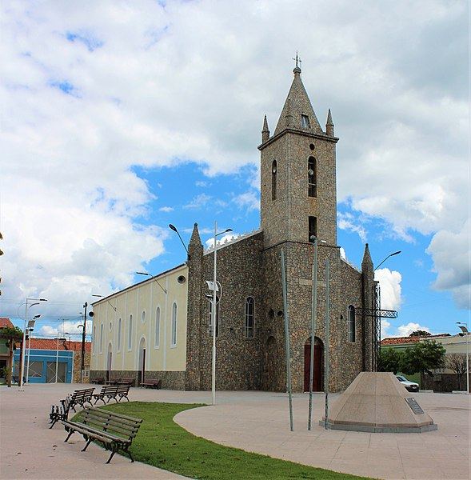
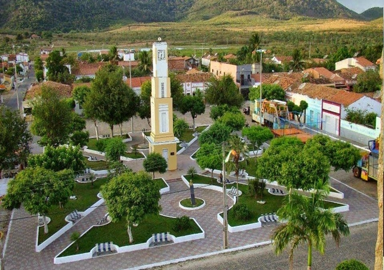

Informações técnicas sobre relevo, população, IDH etc.
| INFORMAÇÕES | |
|---|---|
| Municípios limítrofes | Sobral , Moraújo , Frecheirinha , Alcântaras , Tianguá , Mucambo |
| Fundação | 24 se setembro de 1870 (151 anos) |
| Área total | 775,746 km² |
| Clima | Semi- árido |
| PIB | R$ 63 154,442 mil |
| IDH | 0,591 — baixo |
| INFORMAÇÕES TERRITORIAIS | |
|---|---|
| Número de habitantes | 23 258 hab. |
| Superfície de Coreaú |
77 579 hectares
775,79 km² (299,53 sq mi) |
| Densidade populacional | 29,8 ha./km² |
| Altitude de Coreaú | 87 metros de altitude |
| Coordenadas geográficas decimais |
Latitude:
-3.54045
Longitude: -40.6646 |
| Coordenadas geográficas sexagesimais | Latitude: 3° 32' 26'' Sul , Longitude: 40° 39' 53'' Oeste |
| INFORMAÇÕES DO MUNICÍPIO | |
|---|---|
| Endereço da Prefeitura Municipal de Coreaú |
Coreaú
Prefeitura de Coreaú
Av. Dom José, 55 - Centro Coreaú - CE, 62160-000 Brasil |
| Telefone da prefeitura |
(88) 3645-1183
Internacional: +55 88 3645-1183 |
| Fax |
(88) 3645-1525
Internacional: +55 88 3645-1525 |
| Endereço electrónico da prefeitura |
npmcoreau@sobral.org.br
|
| Site oficial do município | Coreaú.ce.gov.br |
| INFORMAÇÕES DO ADMINISTRATIVAS | ||
|---|---|---|
| Prefeito de Coreaú | JOSE EDEZIO VAZ DE SOUZA | |
| Partido politico | PDT | |
| INFORMAÇÕES DE TRANSPORTE | |
|---|---|
| Transporte urbano disponível | Rodovias Estaduais e Nacionais |
| Aeroporto |
Aeroporto de Sobral
39.6 km
Aeroporto Pinto Martins
72.8 km
Aeroporto Internacional Prefeito Dr.João Silva Filho
138.8 km
|
| INFORMAÇÕES DE DISTÂNCIA A OUTRAS CIDADES | ||
|---|---|---|
| São Paulo : 2318 km | Rio de Janeiro : 2173 km | Brasília : 1578 km |
| Salvador : 1076 km | Belo Horizonte : 1847 km | Manaus : 2152 km |
| Curitiba : 2605 kmm | Fortaleza : 236 km mais perto | Recife : 814 km |
| Belém : 902 km | Porto Alegre : 3152 km | Guarulhos : 2298 km |
| Campinas : 2263 km | São Luís : 420 km | Goiânia : 1738 km |
| Distância calculada em linha reta! | ||
Conheça mais sobre a história da Coreaú.
O atual território de Coreaú situa nas terras nas quais habitaram os índios: Anacé, Tacari-Arariu e Tabajara, e a partir do século XVIII com expansão da produção da pecuária do Ceará, surge uma fazenda e ao redor desta um núcleo urbano conhecido como Fazenda Várzea Grande, vinculado a vila de Granja.
Um dos mais antigos povoadores da região onde hoje se ergue o município de Coreaú foi o tenente-coronel Manuel Dias de Carvalho, cujas terras lhe foram concedidas, em 1705, por sesmarias, todas situadas nas margens férteis do riacho Coreahu, assim grafado no registro de datas e sesmarias. A gleba sempre se prestou admiravelmente ao labor agrícola, prodigalizando nas quadras invernosas dias fartura e de grande bonança aos fazendeiros que aí se estabeleceram. Inicialmente o local era chamado de Várzea Grande , sucedendo-lhe o nome Palma durante muitos anos.
Conta-se que vindo em uma de suas viagem de Roma o patriarca do Juazeiro do Norte, Padre Corre sobre esta denominação interessante lenda. Contam os antigos que no arraial Várzea Grande, havia uma família de negros que se dedicava ao fabrico de broas - bolos de goma muito apreciados. A fama das broas advinha de sua excelência, atraindo gente que de muito longe vinha comprá-lo aos pretos. Como eram fabricadas em forma de palma, era comum ouvir-se dizer de quem se dirigia para Várzea Grande: "Vou para as Palmas". É um vale situado entre a Serra da Meruoca e a Serra de Ibiapaba (Serra Grande).
Saiba mais sobre os melhores lugares e o que fazer em Coreaú.
Dentre os poucos pontos turisticos de Viçosa do Ceará o que mais se destaca é o dedicado aos religiosos, trata-se da famigerada Igreja matriz de Nossa Senhora da Piedade.
 Além da matriz o principal ponto turístico e que atrái diversos turistas é a Praça Principal
Veja como chegar nos melhores pontos de Coreaú
Essas rotas servem apenas para fins de planejamento. Obras, trânsito intenso, fatores climáticos ou outros eventos podem fazer com que as condições sejam diferentes dos resultados no mapa, por isso é preciso planejar o trajeto levando tudo isso em conta. Obedeça a todas as sinalizações ou avisos que aparecerem em seu trajeto.